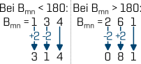

WO-Trainer Uboote HILFE
Die Gegenpeilung, oft auch reziproke Peilung gennat, ist ein so grundlegender Wert, dass er nicht einmal ein eigenes Formelzeichen unter Ubootwachoffizieren hat. Nichtsdestotrotz ist es umso wichtiger, dass Sie jederzeit ohne lange zu rechnen, die Gegenpeilung bestimmen können. Hierzu können Sie folgende Rechenregel verwenden, die das Bestimmen der Gegenpeilung im Kopf stark vereinfacht.
Für $\mathrm{B_{mn} > 180}$ gilt:
Für $\mathrm{B_{mn} < 180}$ gilt:
Um diese Rechnung zu beschleunigen, nutzen Sie zukünftig die +2/-2 Formel:
